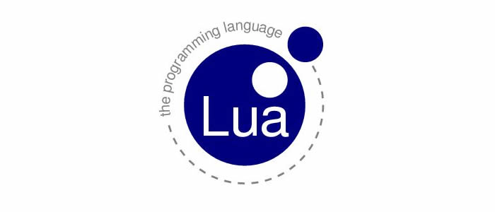
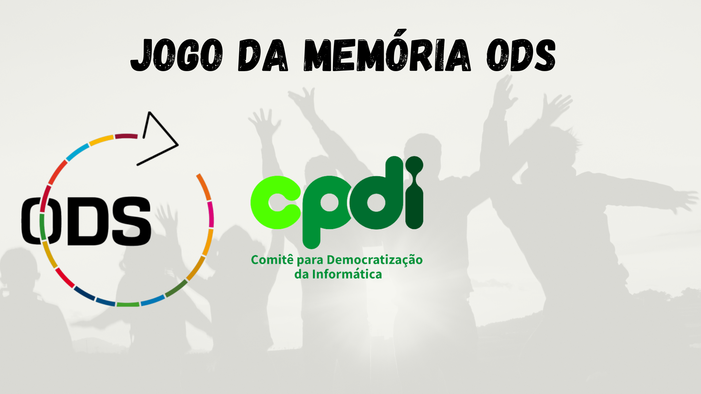

Meu Portifolio
José Bruno Negreiros De Oliveira Dos Reis, 26 anos
Formação: Tecnólogo em tecnologia educacional (em andamento) – Estácio - SC e
Técnico em Segurança do Trabalho – SENAC RS - Ano de conclusão: 2017
Contato (endereço de email): brunonegreiros1707@gmail.com
Habilidades: Comunicação, atendimento ao público, persuasão, vendas, aptidão a tecnologia, conhecimento das ferramentas SAP, excel, word entre outros.
Experiência Profissional:
- Lojas Americanas – Operador de Loja (Setembro 2017 a Janeiro 2020)
Conferência de mercadorias, operação de caixa, abastecimento de loja e atuação
como trainee de supervisor e vendedor.
- Tratibel Cosméticos – Caixa operador e vendedor (Dezembro 2020 até Agosto de
2021)
Operação de caixa, fechamento de caixa, abastecimento de loja, recebimento de
produtos e cadastros no sistema e vendas de variados produtos.
- Lojas Colombo – Vendedor (Janeiro 2022 até Abril de 2022)
Atendimento ao cliente, incluindo negociação e finalização, abertura de crediário,
venda de serviços como consórcios e garantias, busca e entrega de metas e
resultado.
- Lojas Taqi – Vendedor ( Maio 2022 até Outubro de 2022)
Atendimento ao cliente, incluindo negociação e finalização, abertura de crediário,
venda de serviços e garantias, busca e entrega de metas e resultados.
- Celular Center – Vendedor ( Dezembro de 2022 até o momento)
Atendimento ao
cliente, incluindo negociação e finalização, busca e entrega de metas e resultados.
Cursos:
- Curso de Informática – 1 Ano - Mundo Office
- Curso de Manutenção de computadores – 1 Ano - Mundo Office
- Curso de inglês – 3 Anos – Mundo Office
- Cursando programação pelo CPDI- PROJETO COOPERFORTE
Projetos Lua

Projetos HTML

Projeto Final
